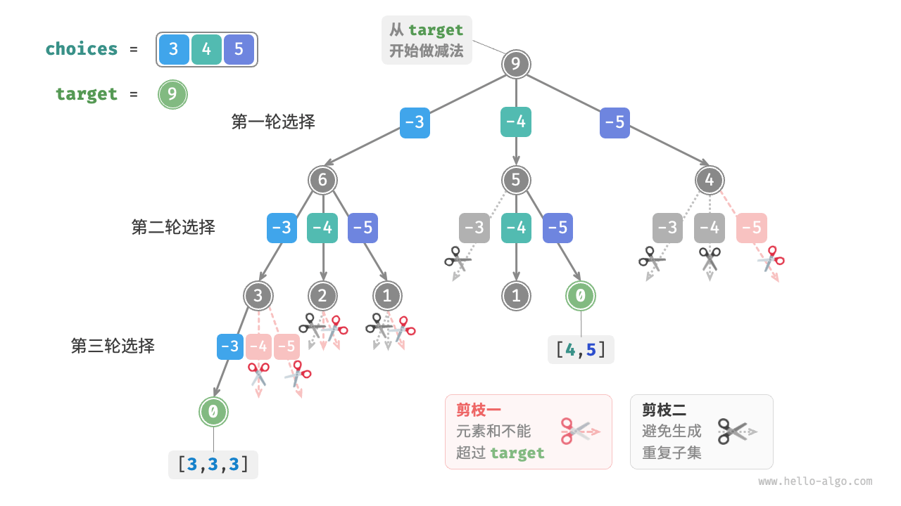
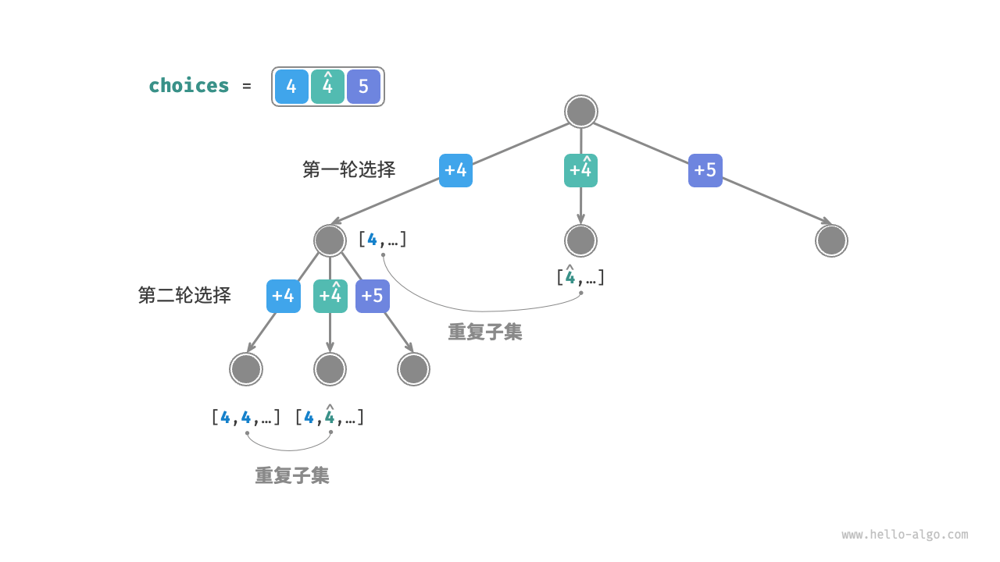
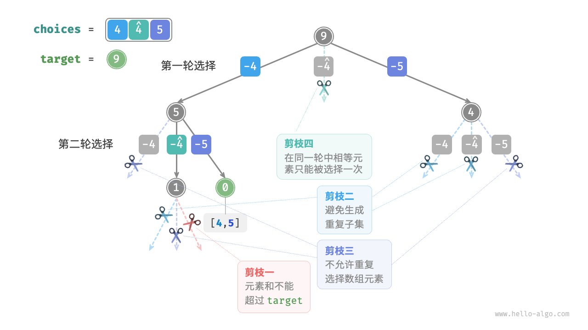

子集和问题
无重复元素的情况
!!! question
给定一个正整数数组 `nums` 和一个目标正整数 `target` ，请找出所有可能的组合，使得组合中的元素和等于 `target` 。给定数组无重复元素，每个元素可以被选取多次。请以列表形式返回这些组合，列表中不应包含重复组合。
例如，输入集合 ${3, 4, 5}$ 和目标整数 $9$ ，解为 ${3, 3, 3}, {4, 5}$ 。需要注意以下两点。
- 输入集合中的元素可以被无限次重复选取。
- 子集不区分元素顺序，比如 ${4, 5}$ 和 ${5, 4}$ 是同一个子集。
参考全排列解法
类似于全排列问题，我们可以把子集的生成过程想象成一系列选择的结果，并在选择过程中实时更新“元素和”，当元素和等于 target 时，就将子集记录至结果列表。
而与全排列问题不同的是，本题集合中的元素可以被无限次选取，因此无须借助 selected 布尔列表来记录元素是否已被选择。我们可以对全排列代码进行小幅修改，初步得到解题代码：
- "Python"
```python
def backtrack(
state: list[int],
target: int,
total: int,
choices: list[int],
res: list[list[int]],
):
"""回溯算法：子集和 I"""
// 子集和等于 target 时，记录解
if total == target:
// 遍历所有选择 for i in range(len(choices)):res.append(list(state)) return// 剪枝：若子集和超过 target ，则跳过该选择 if total + choices[i] > target: continue // 尝试：做出选择，更新元素和 total state.append(choices[i]) // 进行下一轮选择 backtrack(state, target, total + choices[i], choices, res) // 回退：撤销选择，恢复到之前的状态 state.pop()
def subset_sum_i_naive(nums: list[int], target: int) -> list[list[int]]: """求解子集和 I（包含重复子集）""" state = [] // 状态（子集） total = 0 // 子集和 res = [] // 结果列表（子集列表） backtrack(state, target, total, nums, res) return res
- "C++"
```cpp
/* 回溯算法：子集和 I */
void backtrack(vector<int> &state, int target, int total, vector<int> &choices, vector<vector<int>> &res) {
// 子集和等于 target 时，记录解
if (total == target) {
res.push_back(state);
return;
}
// 遍历所有选择
for (size_t i = 0; i < choices.size(); i++) {
// 剪枝：若子集和超过 target ，则跳过该选择
if (total + choices[i] > target) {
continue;
}
// 尝试：做出选择，更新元素和 total
state.push_back(choices[i]);
// 进行下一轮选择
backtrack(state, target, total + choices[i], choices, res);
// 回退：撤销选择，恢复到之前的状态
state.pop_back();
}
}
/* 求解子集和 I（包含重复子集） */
vector<vector<int>> subsetSumINaive(vector<int> &nums, int target) {
vector<int> state; // 状态（子集）
int total = 0; // 子集和
vector<vector<int>> res; // 结果列表（子集列表）
backtrack(state, target, total, nums, res);
return res;
}
- "Java"
```java
/ 回溯算法：子集和 I /
void backtrack(List
state, int target, int total, int[] choices, List
} // 遍历所有选择 for (int i = 0; i < choices.length; i++) {res.add(new ArrayList<>(state)); return;
} }// 剪枝：若子集和超过 target ，则跳过该选择 if (total + choices[i] > target) { continue; } // 尝试：做出选择，更新元素和 total state.add(choices[i]); // 进行下一轮选择 backtrack(state, target, total + choices[i], choices, res); // 回退：撤销选择，恢复到之前的状态 state.remove(state.size() - 1);
/ 求解子集和 I（包含重复子集） /
List
向以上代码输入数组 $[3, 4, 5]$ 和目标元素 $9$ ，输出结果为 $[3, 3, 3], [4, 5], [5, 4]$ 。**虽然成功找出了所有和为 $9$ 的子集，但其中存在重复的子集 $[4, 5]$ 和 $[5, 4]$** 。
这是因为搜索过程是区分选择顺序的，然而子集不区分选择顺序。如下图所示，先选 $4$ 后选 $5$ 与先选 $5$ 后选 $4$ 是不同的分支，但对应同一个子集。

为了去除重复子集，**一种直接的思路是对结果列表进行去重**。但这个方法效率很低，有两方面原因。
- 当数组元素较多，尤其是当 `target` 较大时，搜索过程会产生大量的重复子集。
- 比较子集（数组）的异同非常耗时，需要先排序数组，再比较数组中每个元素的异同。
### 重复子集剪枝
**我们考虑在搜索过程中通过剪枝进行去重**。观察下图，重复子集是在以不同顺序选择数组元素时产生的，例如以下情况。
1. 当第一轮和第二轮分别选择 $3$ 和 $4$ 时，会生成包含这两个元素的所有子集，记为 $[3, 4, \dots]$ 。
2. 之后，当第一轮选择 $4$ 时，**则第二轮应该跳过 $3$** ，因为该选择产生的子集 $[4, 3, \dots]$ 和第 `1.` 步中生成的子集完全重复。
在搜索过程中，每一层的选择都是从左到右被逐个尝试的，因此越靠右的分支被剪掉的越多。
1. 前两轮选择 $3$ 和 $5$ ，生成子集 $[3, 5, \dots]$ 。
2. 前两轮选择 $4$ 和 $5$ ，生成子集 $[4, 5, \dots]$ 。
3. 若第一轮选择 $5$ ，**则第二轮应该跳过 $3$ 和 $4$** ，因为子集 $[5, 3, \dots]$ 和 $[5, 4, \dots]$ 与第 `1.` 步和第 `2.` 步中描述的子集完全重复。

总结来看，给定输入数组 $[x_1, x_2, \dots, x_n]$ ，设搜索过程中的选择序列为 $[x_{i_1}, x_{i_2}, \dots, x_{i_m}]$ ，则该选择序列需要满足 $i_1 \leq i_2 \leq \dots \leq i_m$ ，**不满足该条件的选择序列都会造成重复，应当剪枝**。
### 代码实现
为实现该剪枝，我们初始化变量 `start` ，用于指示遍历起始点。**当做出选择 $x_{i}$ 后，设定下一轮从索引 $i$ 开始遍历**。这样做就可以让选择序列满足 $i_1 \leq i_2 \leq \dots \leq i_m$ ，从而保证子集唯一。
除此之外，我们还对代码进行了以下两项优化。
- 在开启搜索前，先将数组 `nums` 排序。在遍历所有选择时，**当子集和超过 `target` 时直接结束循环**，因为后边的元素更大，其子集和一定超过 `target` 。
- 省去元素和变量 `total` ，**通过在 `target` 上执行减法来统计元素和**，当 `target` 等于 $0$ 时记录解。
- "Python"
```python
def backtrack(
state: list[int], target: int, choices: list[int], start: int, res: list[list[int]]
):
"""回溯算法：子集和 I"""
// 子集和等于 target 时，记录解
if target == 0:
res.append(list(state))
return
// 遍历所有选择
// 剪枝二：从 start 开始遍历，避免生成重复子集
for i in range(start, len(choices)):
// 剪枝一：若子集和超过 target ，则直接结束循环
// 这是因为数组已排序，后边元素更大，子集和一定超过 target
if target - choices[i] < 0:
break
// 尝试：做出选择，更新 target, start
state.append(choices[i])
// 进行下一轮选择
backtrack(state, target - choices[i], choices, i, res)
// 回退：撤销选择，恢复到之前的状态
state.pop()
def subset_sum_i(nums: list[int], target: int) -> list[list[int]]:
"""求解子集和 I"""
state = [] // 状态（子集）
nums.sort() // 对 nums 进行排序
start = 0 // 遍历起始点
res = [] // 结果列表（子集列表）
backtrack(state, target, nums, start, res)
return res
- "C++"
```cpp
/ 回溯算法：子集和 I /
void backtrack(vector
&state, int target, vector &choices, int start, vector
} // 遍历所有选择 // 剪枝二：从 start 开始遍历，避免生成重复子集 for (int i = start; i < choices.size(); i++) {res.push_back(state); return;
} }// 剪枝一：若子集和超过 target ，则直接结束循环 // 这是因为数组已排序，后边元素更大，子集和一定超过 target if (target - choices[i] < 0) { break; } // 尝试：做出选择，更新 target, start state.push_back(choices[i]); // 进行下一轮选择 backtrack(state, target - choices[i], choices, i, res); // 回退：撤销选择，恢复到之前的状态 state.pop_back();
/ 求解子集和 I /
vector
- "Java"
```java
/* 回溯算法：子集和 I */
void backtrack(List<Integer> state, int target, int[] choices, int start, List<List<Integer>> res) {
// 子集和等于 target 时，记录解
if (target == 0) {
res.add(new ArrayList<>(state));
return;
}
// 遍历所有选择
// 剪枝二：从 start 开始遍历，避免生成重复子集
for (int i = start; i < choices.length; i++) {
// 剪枝一：若子集和超过 target ，则直接结束循环
// 这是因为数组已排序，后边元素更大，子集和一定超过 target
if (target - choices[i] < 0) {
break;
}
// 尝试：做出选择，更新 target, start
state.add(choices[i]);
// 进行下一轮选择
backtrack(state, target - choices[i], choices, i, res);
// 回退：撤销选择，恢复到之前的状态
state.remove(state.size() - 1);
}
}
/* 求解子集和 I */
List<List<Integer>> subsetSumI(int[] nums, int target) {
List<Integer> state = new ArrayList<>(); // 状态（子集）
Arrays.sort(nums); // 对 nums 进行排序
int start = 0; // 遍历起始点
List<List<Integer>> res = new ArrayList<>(); // 结果列表（子集列表）
backtrack(state, target, nums, start, res);
return res;
}
下图所示为将数组 $[3, 4, 5]$ 和目标元素 $9$ 输入以上代码后的整体回溯过程。

考虑重复元素的情况
!!! question
给定一个正整数数组 `nums` 和一个目标正整数 `target` ，请找出所有可能的组合，使得组合中的元素和等于 `target` 。**给定数组可能包含重复元素，每个元素只可被选择一次**。请以列表形式返回这些组合，列表中不应包含重复组合。
相比于上题，本题的输入数组可能包含重复元素，这引入了新的问题。例如，给定数组 $[4, \hat{4}, 5]$ 和目标元素 $9$ ，则现有代码的输出结果为 $[4, 5], [\hat{4}, 5]$ ，出现了重复子集。
造成这种重复的原因是相等元素在某轮中被多次选择。在下图中，第一轮共有三个选择，其中两个都为 $4$ ，会产生两个重复的搜索分支，从而输出重复子集；同理，第二轮的两个 $4$ 也会产生重复子集。

相等元素剪枝
为解决此问题，我们需要限制相等元素在每一轮中只能被选择一次。实现方式比较巧妙：由于数组是已排序的，因此相等元素都是相邻的。这意味着在某轮选择中，若当前元素与其左边元素相等，则说明它已经被选择过，因此直接跳过当前元素。
与此同时，本题规定每个数组元素只能被选择一次。幸运的是，我们也可以利用变量 start 来满足该约束：当做出选择 $x_{i}$ 后，设定下一轮从索引 $i + 1$ 开始向后遍历。这样既能去除重复子集，也能避免重复选择元素。
代码实现
- "Python"
```python
def backtrack(
state: list[int], target: int, choices: list[int], start: int, res: list[list[int]]
):
"""回溯算法：子集和 II"""
// 子集和等于 target 时，记录解
if target == 0:
// 遍历所有选择 // 剪枝二：从 start 开始遍历，避免生成重复子集 // 剪枝三：从 start 开始遍历，避免重复选择同一元素 for i in range(start, len(choices)):res.append(list(state)) return// 剪枝一：若子集和超过 target ，则直接结束循环 // 这是因为数组已排序，后边元素更大，子集和一定超过 target if target - choices[i] < 0: break // 剪枝四：如果该元素与左边元素相等，说明该搜索分支重复，直接跳过 if i > start and choices[i] == choices[i - 1]: continue // 尝试：做出选择，更新 target, start state.append(choices[i]) // 进行下一轮选择 backtrack(state, target - choices[i], choices, i + 1, res) // 回退：撤销选择，恢复到之前的状态 state.pop()
def subset_sum_ii(nums: list[int], target: int) -> list[list[int]]: """求解子集和 II""" state = [] // 状态（子集） nums.sort() // 对 nums 进行排序 start = 0 // 遍历起始点 res = [] // 结果列表（子集列表） backtrack(state, target, nums, start, res) return res
- "C++"
```cpp
/* 回溯算法：子集和 II */
void backtrack(vector<int> &state, int target, vector<int> &choices, int start, vector<vector<int>> &res) {
// 子集和等于 target 时，记录解
if (target == 0) {
res.push_back(state);
return;
}
// 遍历所有选择
// 剪枝二：从 start 开始遍历，避免生成重复子集
// 剪枝三：从 start 开始遍历，避免重复选择同一元素
for (int i = start; i < choices.size(); i++) {
// 剪枝一：若子集和超过 target ，则直接结束循环
// 这是因为数组已排序，后边元素更大，子集和一定超过 target
if (target - choices[i] < 0) {
break;
}
// 剪枝四：如果该元素与左边元素相等，说明该搜索分支重复，直接跳过
if (i > start && choices[i] == choices[i - 1]) {
continue;
}
// 尝试：做出选择，更新 target, start
state.push_back(choices[i]);
// 进行下一轮选择
backtrack(state, target - choices[i], choices, i + 1, res);
// 回退：撤销选择，恢复到之前的状态
state.pop_back();
}
}
/* 求解子集和 II */
vector<vector<int>> subsetSumII(vector<int> &nums, int target) {
vector<int> state; // 状态（子集）
sort(nums.begin(), nums.end()); // 对 nums 进行排序
int start = 0; // 遍历起始点
vector<vector<int>> res; // 结果列表（子集列表）
backtrack(state, target, nums, start, res);
return res;
}
- "Java"
```java
/ 回溯算法：子集和 II /
void backtrack(List
state, int target, int[] choices, int start, List
} // 遍历所有选择 // 剪枝二：从 start 开始遍历，避免生成重复子集 // 剪枝三：从 start 开始遍历，避免重复选择同一元素 for (int i = start; i < choices.length; i++) {res.add(new ArrayList<>(state)); return;
} }// 剪枝一：若子集和超过 target ，则直接结束循环 // 这是因为数组已排序，后边元素更大，子集和一定超过 target if (target - choices[i] < 0) { break; } // 剪枝四：如果该元素与左边元素相等，说明该搜索分支重复，直接跳过 if (i > start && choices[i] == choices[i - 1]) { continue; } // 尝试：做出选择，更新 target, start state.add(choices[i]); // 进行下一轮选择 backtrack(state, target - choices[i], choices, i + 1, res); // 回退：撤销选择，恢复到之前的状态 state.remove(state.size() - 1);
/ 求解子集和 II /
List
下图展示了数组 $[4, 4, 5]$ 和目标元素 $9$ 的回溯过程，共包含四种剪枝操作。请你将图示与代码注释相结合，理解整个搜索过程，以及每种剪枝操作是如何工作的。
